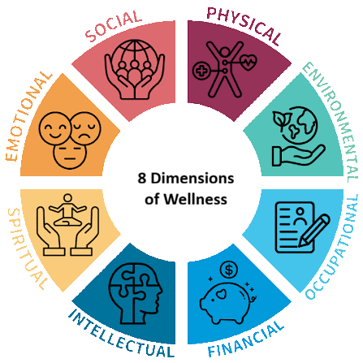

Health and wellness represent the foundation of a balanced life, where health provides the biological and structural baseline of well-being, and wellness serves as the active, daily pursuit of growth and fulfillment.
While health often focuses on the physiological mitigation of illness, wellness is a conscious, lifelong process of making choices that elevate overall life quality.
True well-being cannot be achieved through a single factor like diet or exercise alone; instead, it relies on the continuous harmony of several interconnected dimensions that influence how a person thinks, feels, and interacts with the world.
Centers on maintaining a healthy body through a balanced diet, consistent physical activity, seven to nine hours of quality sleep, and routine medical care.
Involves understanding, accepting, and managing feelings while navigating life's challenges with resilience and stress-reduction techniques.
Driven by lifelong learning, mental stimulation, and curiosity through creative activities, exploring new ideas, and solving complex problems.
Focuses on building and maintaining a healthy, supportive network of relationships through clear communication and community belonging.
Involves seeking meaning, purpose, and direction in human existence through meditation, volunteer work, or aligning actions with personal values.
Refers to managing personal monetary affairs through budgeting, understanding debt, and saving for future goals to reduce anxiety.
Centers on deriving personal satisfaction from work by aligning career pursuits with personal values and maintaining work-life balance.
Involves understanding the relationship between health and surroundings by maintaining a clean, safe, and sustainable living space.
Centers on maintaining a healthy body through a balanced diet, consistent physical activity, seven to nine hours of quality sleep, and routine medical care.
Involves understanding, accepting, and managing feelings while navigating life's challenges with resilience and stress-reduction techniques.
Driven by lifelong learning, mental stimulation, and curiosity through creative activities, exploring new ideas, and solving complex problems.
Focuses on building and maintaining a healthy, supportive network of relationships through clear communication and community belonging.
Involves seeking meaning, purpose, and direction in human existence through meditation, volunteer work, or aligning actions with personal values.
Refers to managing personal monetary affairs through budgeting, understanding debt, and saving for future goals to reduce anxiety.
Centers on deriving personal satisfaction from work by aligning career pursuits with personal values and maintaining work-life balance.
Involves understanding the relationship between health and surroundings by maintaining a clean, safe, and sustainable living space.
Go to bed and wake up at the same time every day, even on weekends. Aiming for 7 to 9 hours of sleep regulates circadian rhythms, stabilizes daily energy levels, and reduces morning cortisol spikes.
Log every purchase for the next 7 days without altering your normal behavior. Identifying accurate baseline spending habits creates the foundation for a sustainable budget and reduces financial ambiguity.
Add a brief walk immediately after lunch or dinner. This low-intensity activity lowers postprandial blood glucose spikes, aids digestion, and contributes directly to weekly physical activity metrics.
Set a timer for 15 minutes to focus exclusively on one work task, reading materials, or a hobby while disabling external notifications. Eliminating cognitive switching reduces mental fatigue and builds focus.
Reach out to a colleague, friend, or family member with a brief note acknowledging a specific helpful action. This strengthens social bonds, fosters mutual support networks, and helps counter isolation.
Lowering systemic cortisol levels through consistent sleep, financial tracking, and active movement protects the body from the physiological wear and tear of long-term anxiety.
Utilizing targeted monotasking and regular physical breaks sharpens focus, prevents cognitive fatigue, and increases task efficiency without the burn-out associated with constant multitasking.
Stabilizing circadian rhythms and adding short walks optimizes metabolic digestion, balances insulin sensitivity, and strengthens immune system response times.
Building strong social support networks and practicing mental boundary-setting provides an emotional buffer, helping you recover from unexpected professional or personal setbacks more efficiently.
Developing concrete awareness of cash flow and intentional resource allocation eliminates impulse-driven financial panic, facilitating predictable, long-term wealth accumulation.